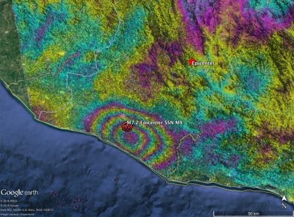

9 Synthetic Aperture Radar
9.1 Summary
In a departure from nearly every other type of remotely sensed imagery we’ve covered in this course, we spent our last week speaking about Synthetic Aperture Radar, better known as SAR. I’ll briefly discuss what makes SAR so unique compared to the other sensors we’ve discussed before chatting about some of the key use cases for the technology.
9.1.1 SAR is an Active Sensor
In the very first week of class, I briefly touched on the difference between active and passive sensors in the first entry of this learning diary. Whereas every sensor we’ve discussed so far has been a passive sensor, which simply detects radiation reflected off the Earth’s surface, SAR is an active sensor which emits radiation at a very specific wavelength and measures reflections of its own radiation off the surface (Earth Science Data Systems 2020). These wavelengths fall into the microwave portion of the electromagnetic spectrum, and are longer than visible and infrared light. They are measured on the order of centimetres instead of millimetres or nanometres. This gives SAR sensors the unique ability to detect ground-level phenomena through clouds.
At such large wavelengths, the size of the radar antenna, which you could call the aperture, relative to the wavelength becomes an important constraint. The swath of land being detected on earth by a single pulse, perhaps kilometres in width, is recorded in extremely low resolution (nasaGetKnowSARn.d?).
To overcome this limitation, SAR uses a ‘synthetic aperture’ that is substantially longer than the metres-long antenna capable of being mounted on the satellite itself. It manages to do this by using its trajectory through space to ‘synthesise’ a much larger antenna. Because the satellite captures an area of multiple kilometres with each pulse, it can detect a single point on earth with a number of different pulses taken from different points along its orbit, a sort of composite image of each point can be generated to massively improve the effective resolution (nasaGetKnowSARn.d?).
9.1.2 Data Captured by SAR
SAR data is less straightforward to interpret than traditional optical data, because SAR signals have a number of different properties which provide information about ground conditions. I will detail these below

The primary information returned by a SAR signal, analogous to radiometric intensity in a passive optical sensor, is known as backscatter, or amplitude. This is a simple measure of how much of the radar pulse which the SAR sensor sent to earth was returned back to the satellite. This information is valuable to users because different types of surfaces reflect (or fail to reflect) radar pulses to different extents. For instance, flat surfaces like still water tend to scatter radar signals back into space but away from the satellite (and thus the sensor). For that reason, still water will appear as having very low backscatter (Clemente-Colón and Yan 2000). Conversely, rough surfaces like bare land will scatter the signal in all directions, including back toward the satellite in question (Clemente-Colón and Yan 2000). Buildings often return a substantial amount of the radar pulse back to the sensor through a characteristic ‘double bounce’, wherein the signal is scattered off of the building’s surface, onto the ground, and then back into space in the direction from which it came.
Uniquely to SAR, radar signals also exist in different polarizations, which refer to the orientation of the wave as it travels relative to the surface being imaged (Alaska Satellite Facility, n.d.). Signals can be emit or received in one of two orientations - horizontally or vertically relative to the surface being imaged. Some sensors emit or receive signals in a single orientation (single-pol), whereas others are able to emit and capture both polarizations (dual-pol) (Alaska Satellite Facility, n.d.). Crucially, different types of surfaces are sensitive to different signal polarizations (Earth Science Data Systems 2020). For instance, rough surfaces best scatter VV signals (meaning the signal was transmitted and received vertically), whereas vegetation best scatters signals in the opposite polarization transmitted (VH or HV).

Finally, SAR signals also contain information about their phase. As a signal wave travels, its phase shifts from peak to trough with each wavelength travelled. This information is important because the part of phase at which the signal is returned to the sensor gives us some information about the distance from the sensor to the point being measured (Earth Science Data Systems 2020). Although its difficult to use this information to generate insights into absolute distance, repeat observations from a particular ground point, which are likely to change only on the order of centimetres or less, can be used to track relative changes in topography. One of the key applications of information like this is tracking minor changes in topography resulting from natural phenomena like earthquakes.

9.2 Applications in Research
SAR data can be used in a number of dramatically different applications using its many different (and somewhat unrelated) properties. I will focus on two different use cases, one which takes advantage of backscatter measurements and one which uses changes in wave phase to measure topography changes.
[SECTION ON FLOODING DETECTION]
[EARTHQUAKE STUFF - Interferometry/InSAR]
9.3 Reflection
[UTILITY FOR OUR SPATIAL APPLIATIONS CLASS/PRESENTATION]